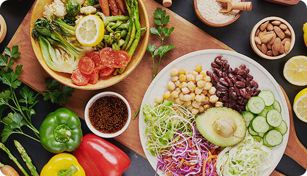
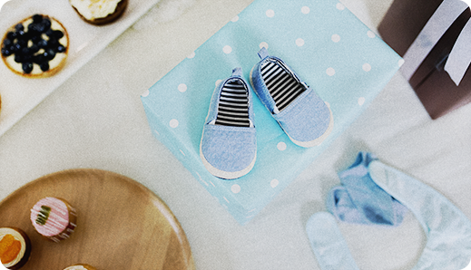
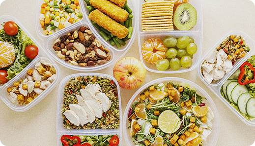
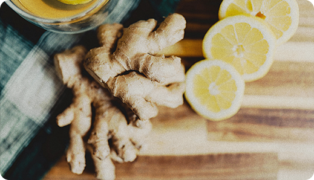

Dicas práticas, receitas saudáveis e acolhimento para você cuidar de quem você ama, sem esquecer de cuidar de você.
Saiba mais
O corpo se transforma para gerar uma nova vida. Saiba o que esperar e como acolher essas mudanças com leveza.
Ler mais

Saiba quais pratos não podem faltar no seu primeiro trimestre.
Ler mais
Pequenas atitudes diárias para renovar sua energia e fortalecer seu bem-estar.
Ler mais

Dicas práticas para montar o enxoval de bebe com inteligência e economia, focado no essencial.
Ler mais
Descubra como oferecer os nutrientes certos para o crescimento saudável do seu bebê.
Ler mais

Dicas valiosas para escolher ingredientes saudáveis e acessíveis para o dia a dia.
Ler mais
O corpo se transforma para gerar uma nova vida. Saiba o que esperar e como acolher essas mudanças com leveza.
Ler mais

Descubra como a combinação de gengibre e frutas cítricas pode aliviar o mal-estar matinal.
Ler mais